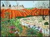
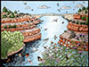
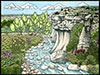
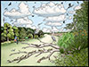
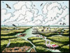
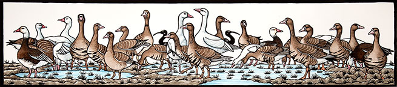

| Home | Hand colored Lino cuts |
Lithographs | Paintings | Archive | Exhibits & Events | Galleries | River Book | Contact | About the Artist |
 River of Contrasts:
From its beginning at the edge of the High Plains of Texas, the Colorado River flows some 800 miles through twenty counties to meet the Gulf of Mexico. On its way, it fills nine lakes and reservoirs to supply water and electricity to vast areas of Texas. The river runs through the center of towns like Colorado City, La Grange, Wharton, and Austin. Over 1.1 million people in Central Texas alone depend on the Colorado River's water for drinking, irrigation, electricity, and industry. The Colorado River is one of the most utilized and important rivers in Texas yet it is also one of the most underappreciated. River of Contrasts: The Texas Colorado interweaves the complex stories of the River's past with the present and future using personal narrative and interviews with land owners and river people to link local history and lore, natural history, geology and current issues. Each of the six chapters centers on a section or area of the river which roughly correlates to a Texas ecoregion. In each of these regions, the river develops a unique character that is reflected in the natural history and ecology, cultural importance, geology, historical importance, environmental issues, and current conflicts or concerns. The book entertains, informs, and educates readers about the natural beauty of the existing river, its transformative power, the multitude of ways the river is used, and potential threats to the river's existence. Over fifty hand colored linocuts, lithographs, silkscreen prints and photographs by the author illustrate the changing character of the river and its diverse inhabitants. Detailed maps of each section encourage the reader to travel down the river with the author as she hikes, wades, kayaks, floats, canoes, and boats the Colorado River from the headwaters at the edge of the Caprock Escarpment down to Matagorda Bay. Chapters Please check back for information about River of Contrast art exhibits, book signings or workshops. Join CRISPIE NEWS.  |
|||
| ©2002-2012 Margie Crisp • design by Margie Crisp & Willowbrook Designs | |||